Publications
International Journal

- Publications
- >
- International Journal
International Journal (recent 5 years)
[66]
66. Robust prediction of parameterized cardiovascular
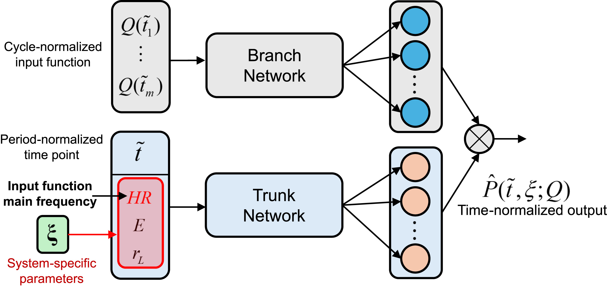
hemodynamics using deep operator networks with time normalization (View)
Junki Hong, Bomi Lee, Adelle Ria Persad, Hyunwoo Song, Changhee Min,
Jae-Hak Jeong, Alireza Doostan, Yong-Hwa Park
Computer Methods and Programs in Biomedicine, 2026. (SCIE, IF 4.8)
[첨부파일][65]
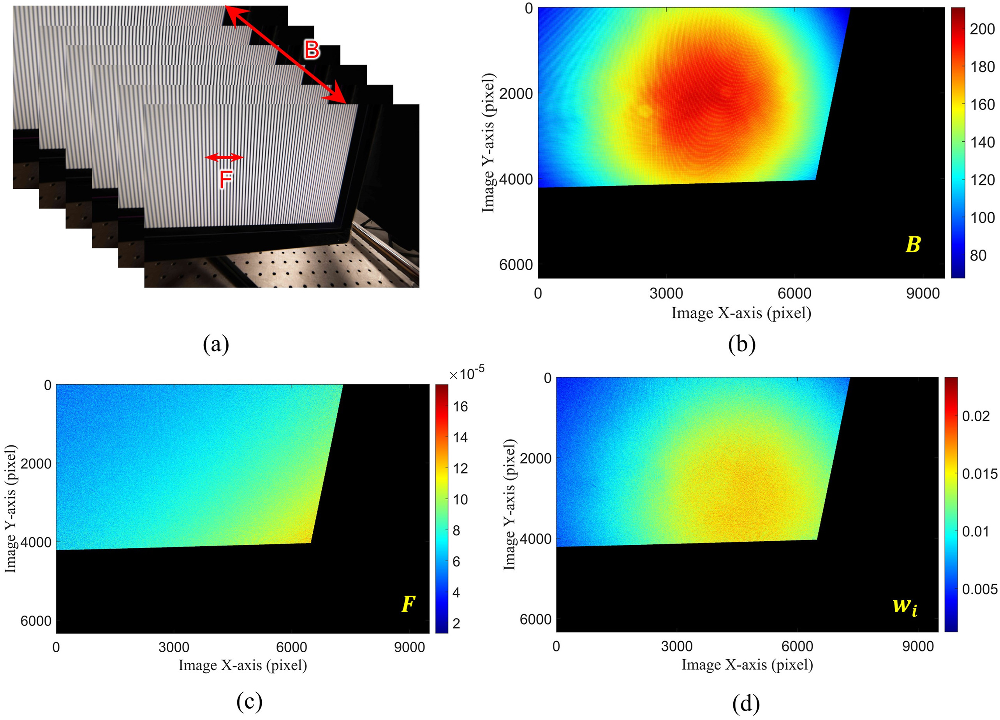
65. Three-dimensional measurement of ship blocks using a
multi-vision system with weighted generic calibration (View)Jeongmin Kim, Jin Kim, Manhee Cho, Yeonghwan Kim,
Bong-gook Kang, Yong-Hwa Park,Ocean Engineering, 2026. (SCIE, IF 5.5)
[첨부파일][64]
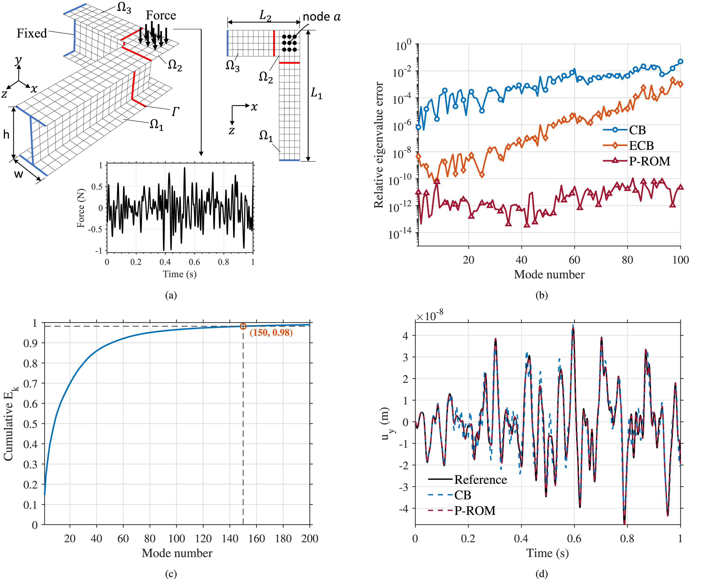
64. Solving FEM models without assembly: Its promise
and challenge (View)K.C. Park, J.A. Gonzaelez, S.J. Shin, S.H. Kang, M.H. Hwang, J.G. Kim,
M.F. Baqir, J.H. Hang, R.W. Hagos, S.C. Lee, Y.H. Park, H.J. Kim,
K.K. Maute, C.A. Felippa,Computer Methods in Applied Mechanics and Engineering, 2026.
(SCIE, IF 7.3)
[첨부파일][63]
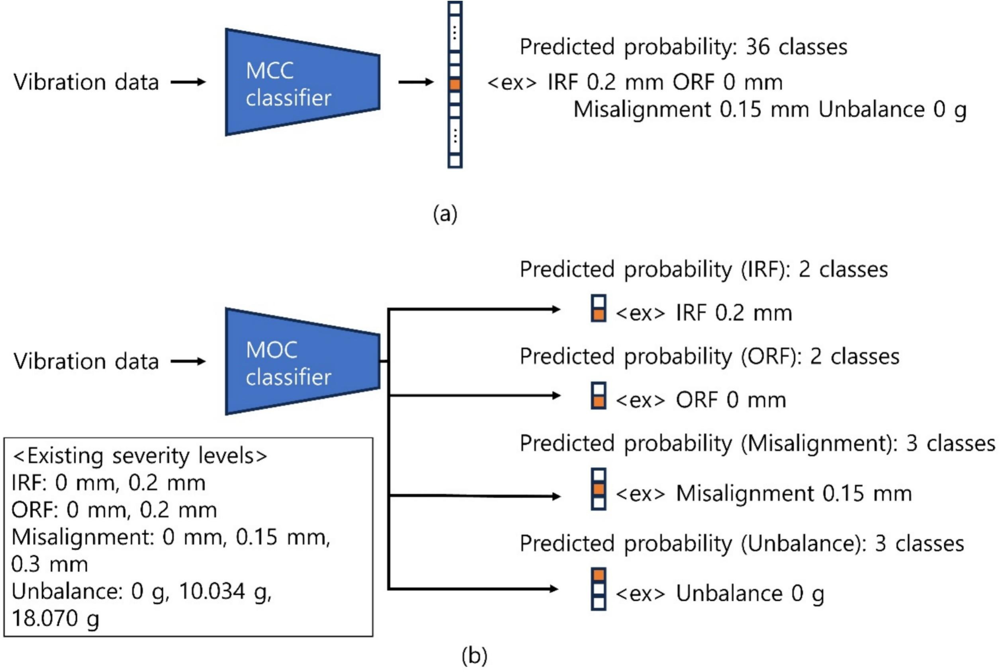
63. Multi-output classification using a cross-talk architecture
for compound fault diagnosis of motors in partially labeled
condition (View)Wonjun Yi, Wonho Jung, Heyonu Nam, Kangmin Jang,
Yong-Hwa Park,Mechanical Systems and Signal Processing, 2026. (SCIE, IF 8.9)
[첨부파일][62]
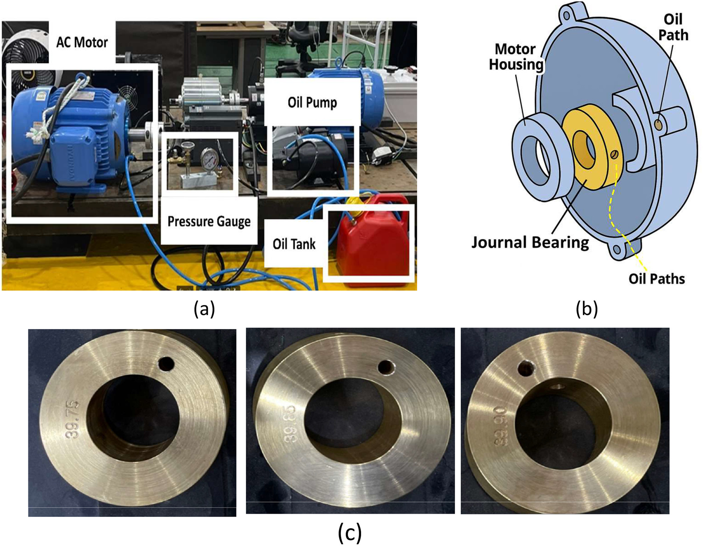
62. Vibration, current, torque, RPM dataset for multiple fault
conditions in industrial-scale electric motors under
randomized speed and load variations (View)Wonho Jung, Junho Kim, Kangmin Jang, Sung-Hyun Yun,
Daeguen Lim, Minje Jin, Yong-Hwa Park,Data in Brief, 2025. (SCIE, IF 1.4)
[첨부파일][61]
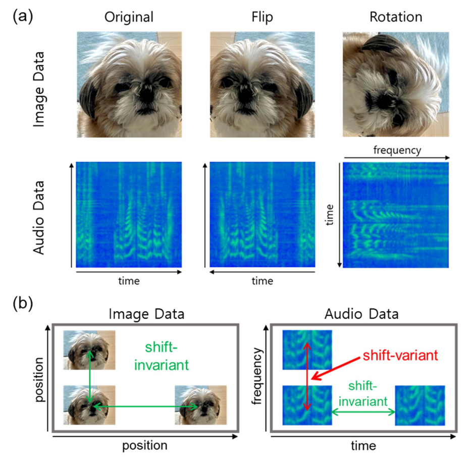
61. Towards Understanding of Frequency Dependence
on Sound Event Detection (View)Hyeonuk Nam, Seong-Hu Kim, Deokki Min, Byeong-Yun Ko,
Yong-Hwa Park,IEEE Transactions on Audio, Speech and Language Processing, 2025.
(SCIE, IF 1.9)
[첨부파일][60]
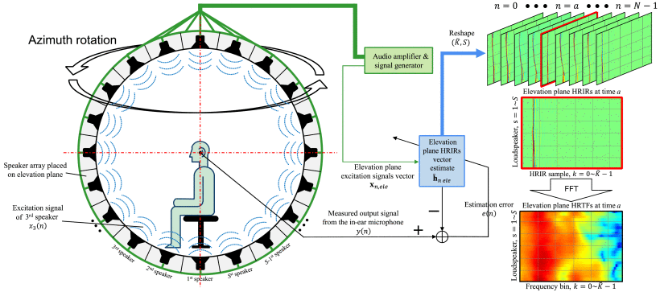
60. DNN-Based HRIRs Identification With a Continuously
Rotating Speaker Array (View)Byeong-Yun Ko, Deokki Min, Hyeonuk Nam, Yong-Hwa Park,
IEEE Transactions on Instrumentation and Measurement, 2025.
(SCIE, IF 5.9)
[첨부파일][59]
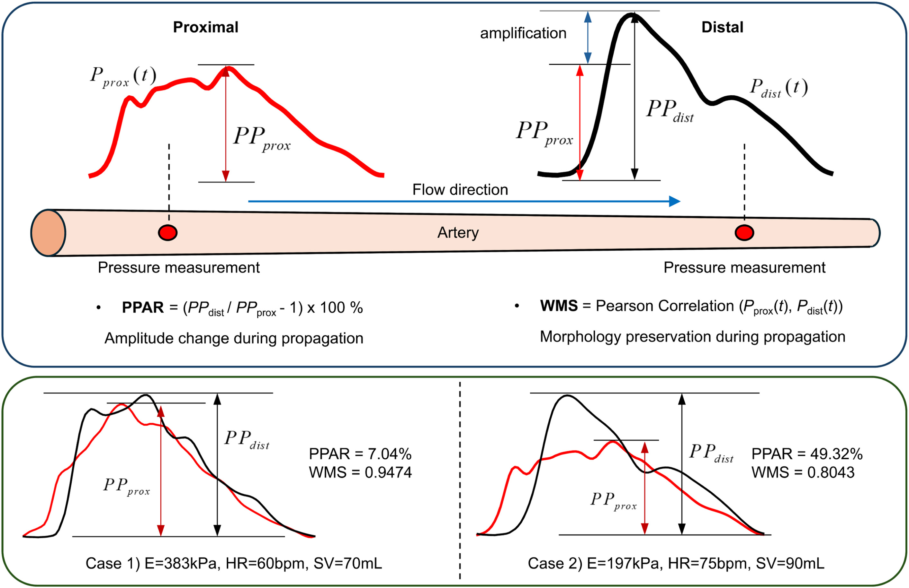
59. Correlation analysis of arterial pressure waveform
morphology similarity and relative pulse transit time usingcardiovascular hardware simulator and hemodynamic model
(View)
Junki Hong, Bomi Lee, Adelle Ria Persad, Hyunwoo Song,
Changhee Min, Jae-Hak Jeong, Yong-Hwa Park,
Computers in Biology and Medicine, 2025. (SCIE until Nov 2025. IF 6.3)
[첨부파일][58]
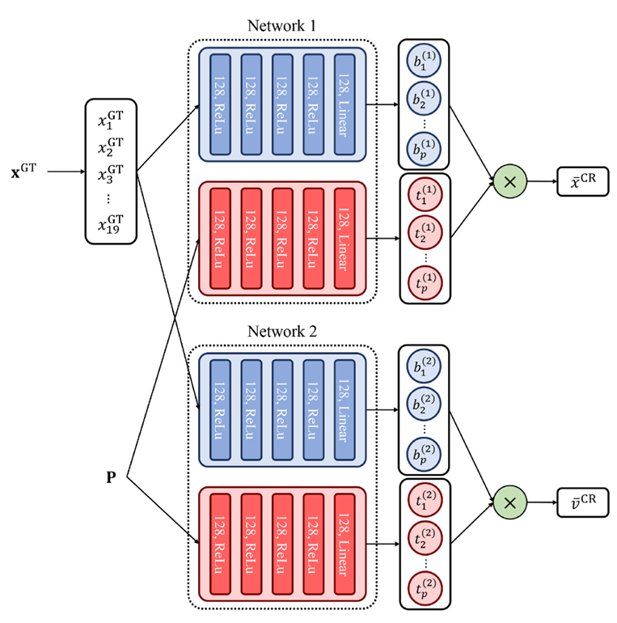
58. Application of DeepONet to predict transient
drop motion of the control rod in real-time (View)
Dae-Guen Lim, Gil-Yong Lee, Yong-Hwa Park,
Nuclear Engineering and Technology, 2025. (SCIE, IF 2.6)
[첨부파일][57]
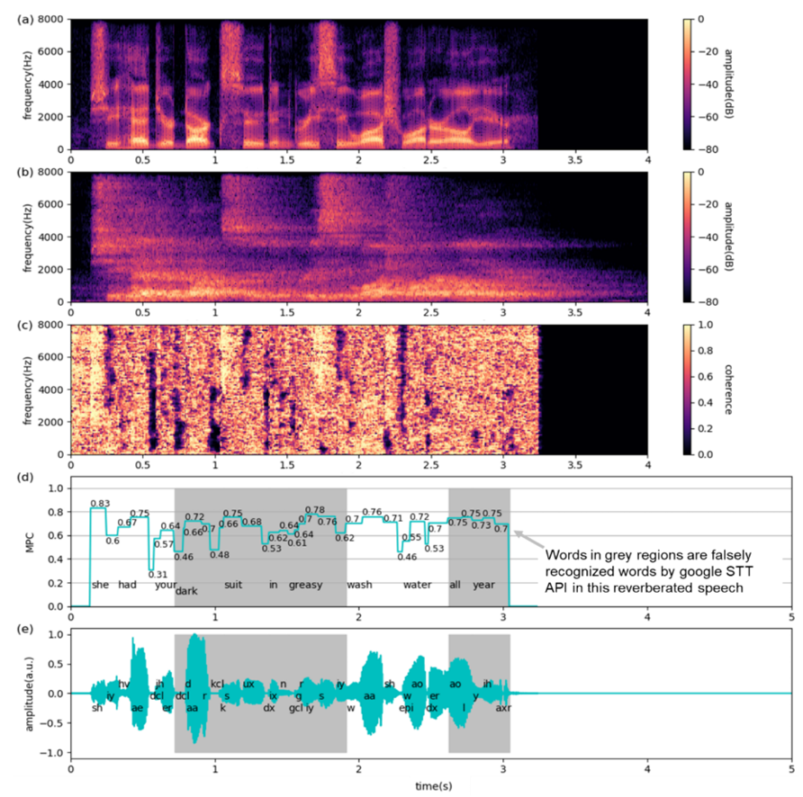
57. Coherence-based phonemic analysis on the effect on
reverberation to practical automatic speech recognition (View)
Hyeonuk Nam, Yong-Hwa Park, Applied Acoustics, 2025. (SCIE, IF 3.6)
[첨부파일][56]
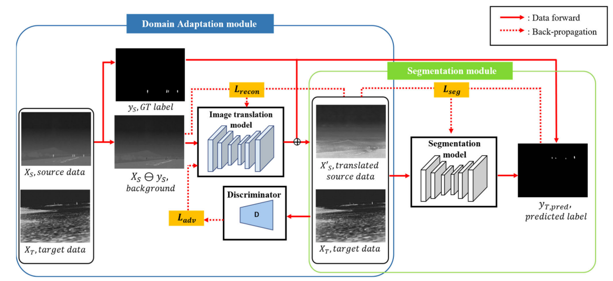
56. Thermal-Infrared Remote-Target Detection System for
Maritime Rescue Using 3-D Game-Based Data Augmentation
With GAN (View)
Sungjin Cheong, Wonho Jung ,Yoon Seop Lim, Yong-Hwa Park,
IEEE Transactions on Geoscience and Remote Sensing, 2024.
(SCIE, IF 8.6)
[첨부파일][55]
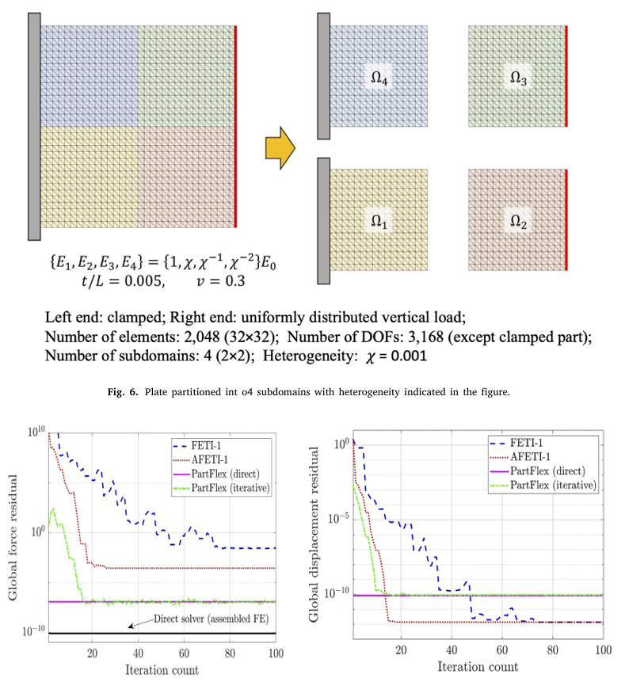
55. A partitioned flexibility (PartFlex) method for structural
analysis (View)
K.C. Park, C.A. Felippa, S.H. Kang, J.A. González, S.J. Shin, Y.H. Park,
J.G. Kim, Computer Methods in Applied Mechanics and Engineering,
2024. (SCIE, IF 7.3)
[첨부파일][54]
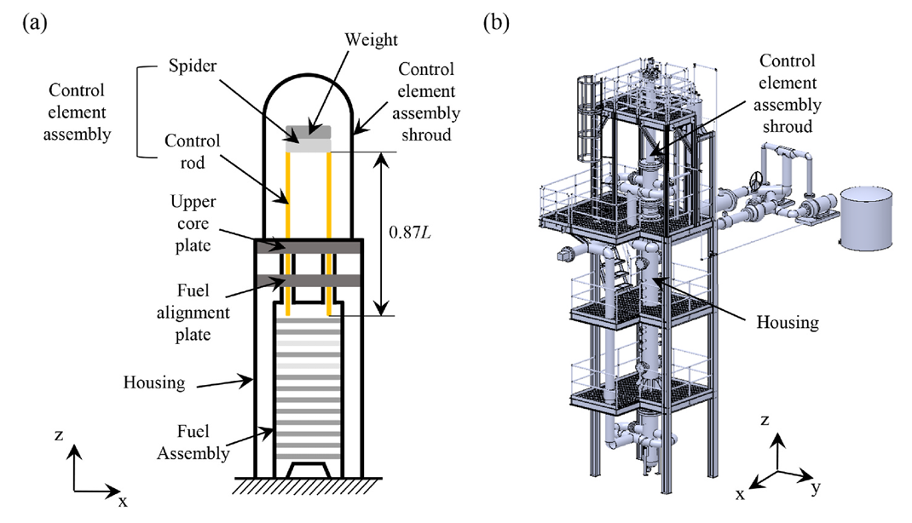
54. A computational framework for drop time assessment of a
control element assembly under fuel assembly deformations with fluid-structure interaction and frictional contact (View)
Dae-Guen Lim, Gil-Yong Lee, Nam-Gyu Park, Yong-Hwa Park,
Nuclear Engineering and Technology, 2024. (SCIE, IF 2.6)
[첨부파일][53]
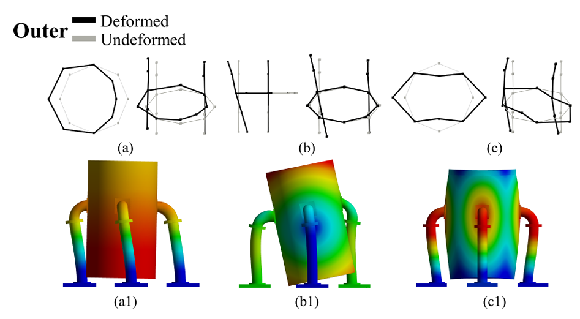
53. Validation of the added mass effect in the narrow gaps of
nuclear reactor pressure vessels (View)
Kang-Jae Park, Gil-Yong Lee, Jae-Hak Jeong, Yong-Hwa Park,
Journal of Sound and Vibration, 2024. (SCIE, IF 4.9)
[첨부파일][52]
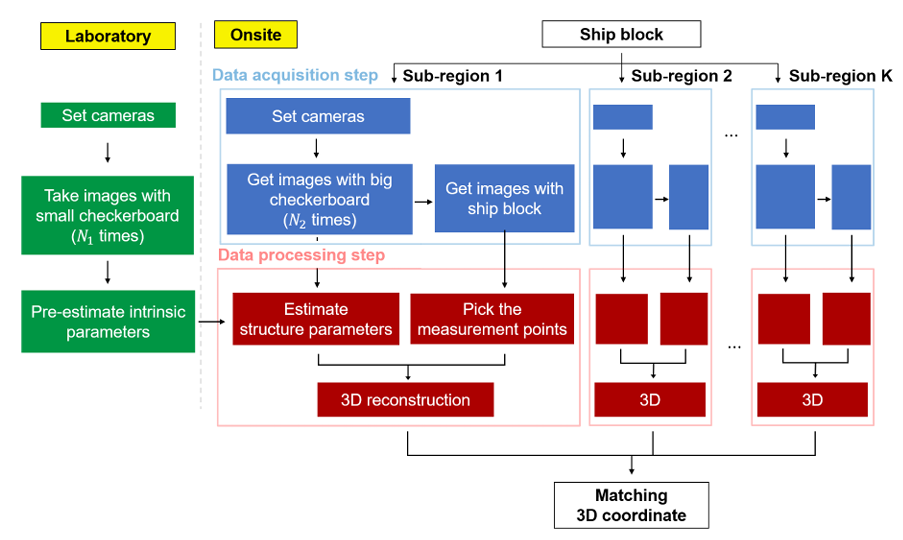
52. Highly accurate three-dimensional measurement of large
structures using multiple stereo vision with improved two-step calibration algorithm (View)
Jeongmin Kim, Jaeduck Lee, Yong-Hwa Park, Measurement,
2024. (SCIE, IF 5.6)
[첨부파일][51]
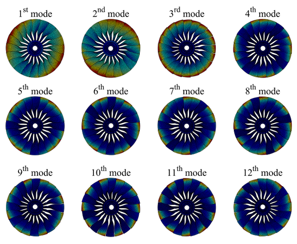
51. Model order reduction based on low-rank approximation for parameterized eigenvalue problems in structural dynamics
(View)
Gil-Yong Lee, Kang-Jae Park, Dae-Guen Lim, Yong-Hwa Park, Journal of Sound and Vibration, 2024. (SCIE, IF 4.9)
[첨부파일][50]
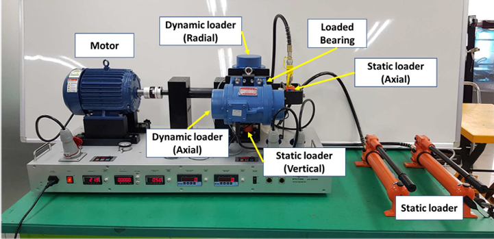
50. Vibration, and temperature run-to-failure dataset of ball
bearing for prognostics (View)
Wonho Jung, Sung-Hyun Yun, Yong-Hwa Park, Data in Brief,
2024. (SCIE, IF 1.4)
[첨부파일][49]
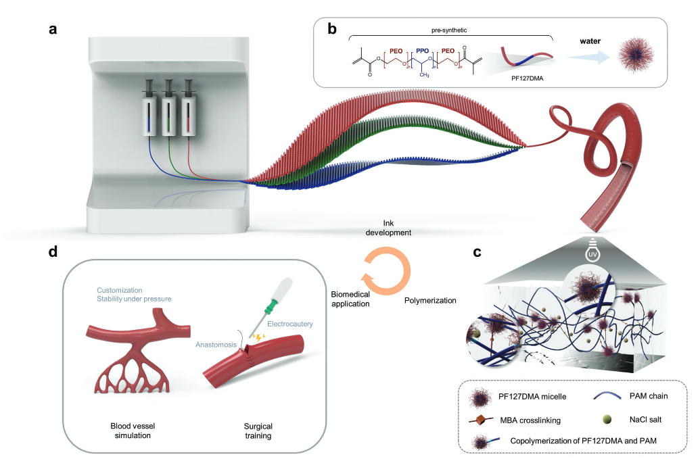
49. Hydrogel Ink for 3D Printing with High and Widely Tunable
Mechanical Properties via the Salting-Out Effect (View)
Kun Woo Ko, Taehoon Lee, Jae-Hak Jeong, Yeonteak Lee, Ikjin Kim,
Jungmok Seo, Yong-Hwa Park, Jin-Oh Kim, Steve Park,
Advanced Materials Technologies, 2024. (SCIE, IF 6.2)
[첨부파일][48]
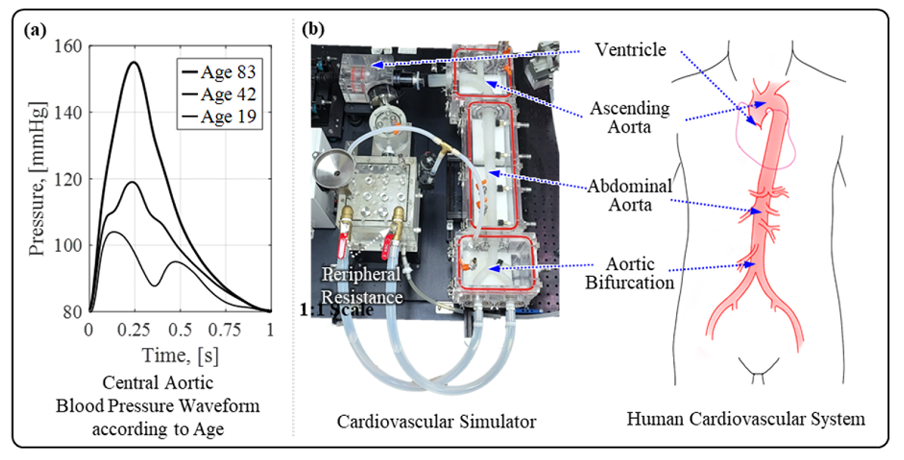
48. Cardiovascular hardware simulator and artificial aorta-
generated central blood pressure waveform database
according to various vascular age for cardiovascular health
monitoring applications (View)
Jae-Hak Jeong, Bomi Lee, Junki Hong, Changhee Min, Adelle Ria Persad, Tae-Heon Yang, Yong-Hwa Park, Computers in Biology and Medicine,
2024. (SCIE, IF 6.3)
[첨부파일][47]
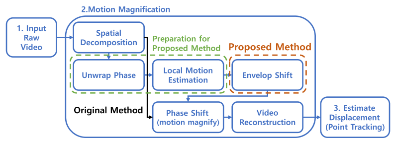
47. Enhanced video motion magnification utilizing envelop shift for vision-based vibration measurements (View)
Jaeduck Lee, Kang-Jae Park, Yong-Hwa Park, IEEE Transactions on
Instrumentation and Measurement, 2024. (SCIE, IF 5.9)
[첨부파일][46]
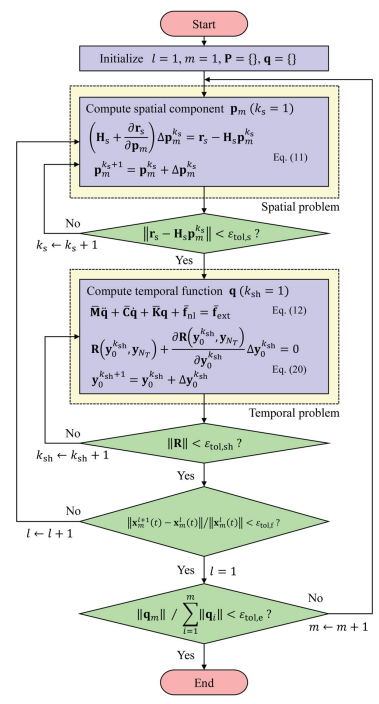
46. Proper generalized decomposition-based iterative enrichment process combined with shooting method for steady-state
forced response analysis of nonlinear dynamical systems
(View)
Dae-Guen Lim, Gil-Yong Lee & Yong-Hwa Park, Computational
Mechanics, 2024. (SCIE, IF 3.8)
[첨부파일][45]
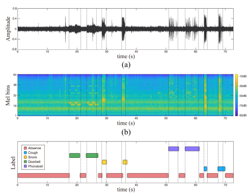
45. Real-Time Sound Recognition System for Human Care Robot Considering Custom Sound Events (View)
Seong-Hu Kim, Hyeonuk Nam, Sang-Min Choi, Yong-Hwa Park,
IEEE Access, 2024. (SCIE, IF 3.6)
[첨부파일][44]
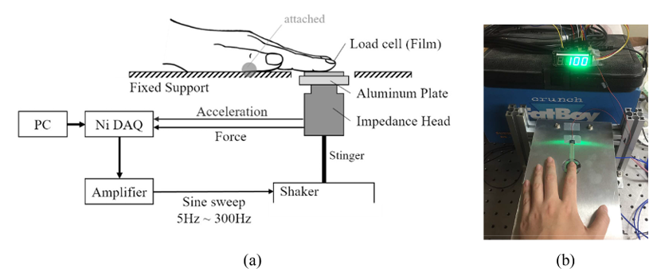
44. Feasibility study on person identification utilizing frequency response functions of human fingers (View)
Hyewon Yoo, Jae Woong Bae, Jae-Hak Jeong, Yong-Hwa Park,
Journal of Sound and Vibration, 2024. (SCIE, IF 4.9)
[첨부파일][43]
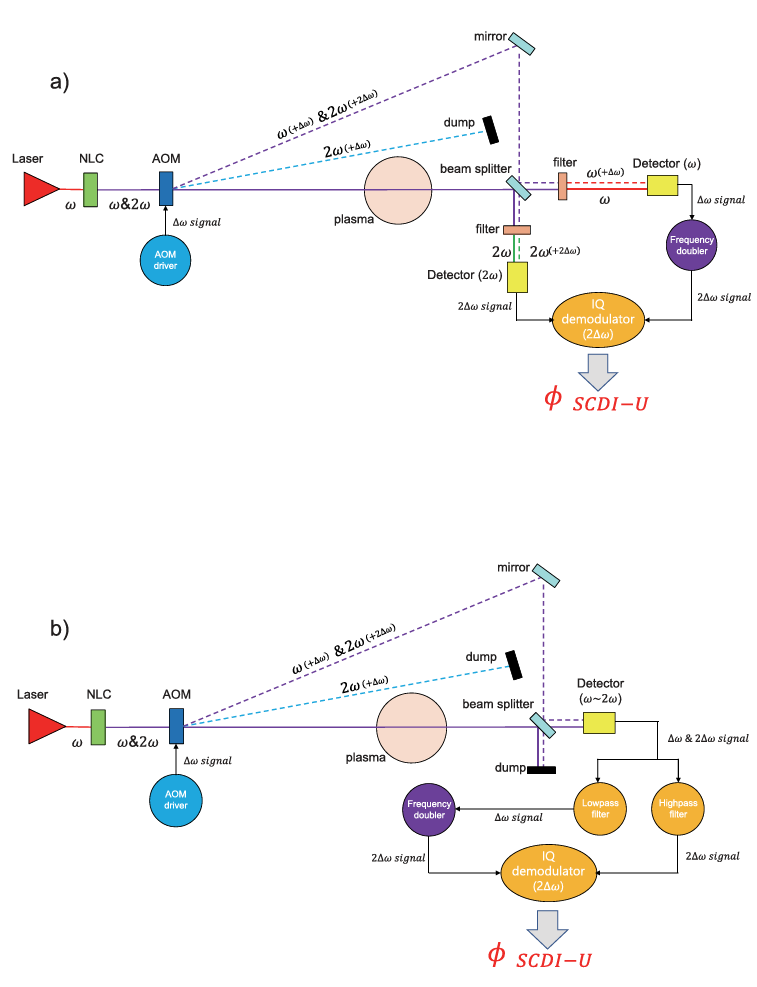
43. Development of the upgraded single crystal dispersion
interferometer (SCDI-U) and its first measurements of the line
integrated electron densities in KSTAR during shattered pellet
injections (View)
Dong-Geun Lee, Kwan Chul Lee, J.-W. Juhn, Jae-seok Lee, Jayhyun Kim, SooHwan Park, Michael Lehnen, Yong-Hwa Park, Jae-Hak Jeong,
aebeom Yim, Nuclear Fusion, 2024. (SCIE, IF 4.0)
[첨부파일][42]
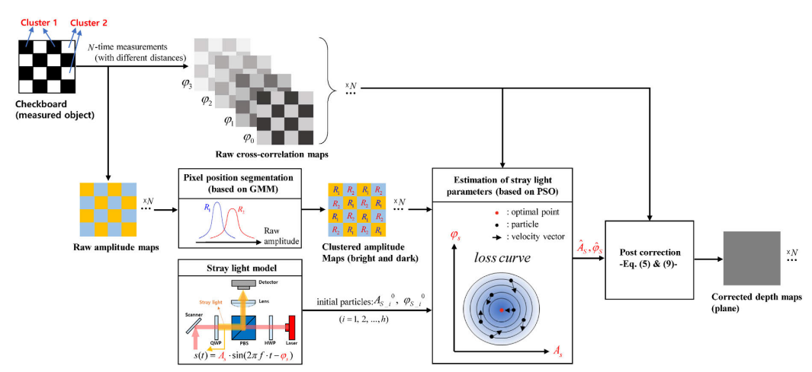
42. Automatic Internal Stray Light Calibration of AMCW Coaxial
Scanning LiDAR Using Black and White Image Patterns (View)
Sung-Hyun Lee, Yoon-Seop Lim, Wook-Hyeon Kown, Yong-Hwa Park,
IEEE Transactions on Instrumentation and Measurement, 2024.
(SCIE, IF 5.9)
[첨부파일][41]
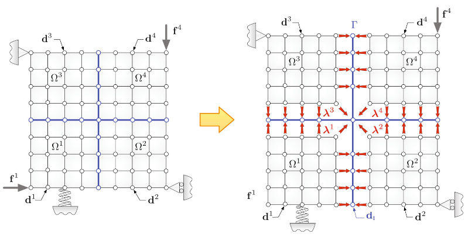
41. Displacement-based partitioned equations of motion for
structures: Formulation and proof-of-concept applications
(View)
K. C. Park, J. A. González, Y. H. Park, S. J. Shin, J. G. Kim, K. K. Maute,
C. Farhat, C. A. Felippa, International Journal for Numerical Methods
in Engineering, 2023. (SCIE, IF 2.7)
[첨부파일][40]
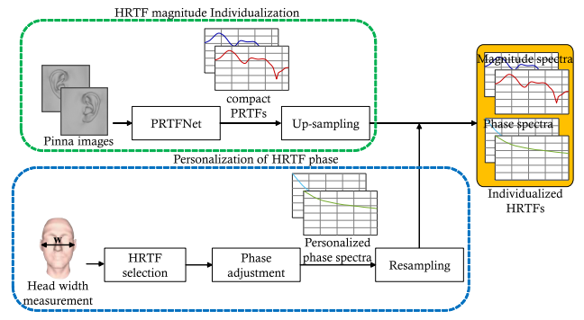
40. PRTFNet: HRTF Individualization for Accurate Spectral
Cues Using a Compact PRTF (View)
Byeong-Yun Ko, Gyeong-Tae Lee, Hyeonuk Nam, Yong-Hwa Park,
IEEE Access, 2023. (SCIE, IF 3.4)
[첨부파일][39]
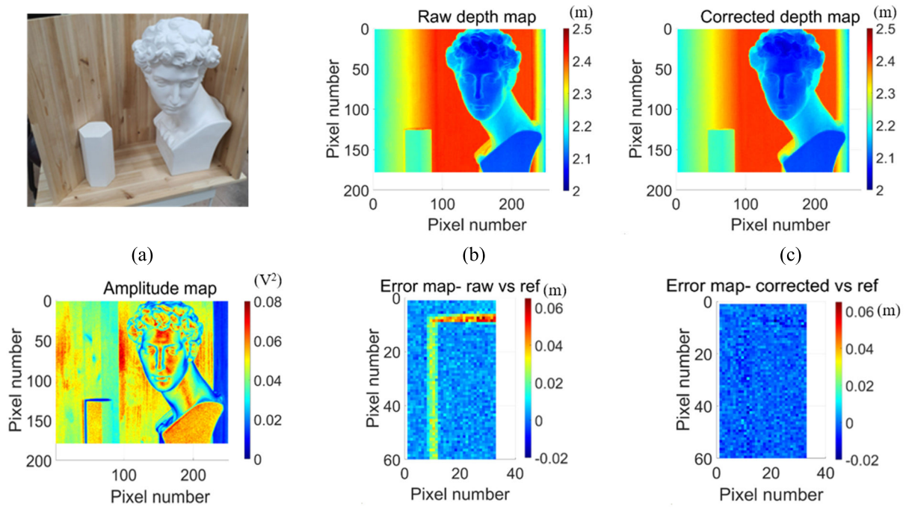
39. Multipath Interference Suppression of Amplitude-Modulated Continuous Wave Coaxial-Scanning LiDAR Using Model-Based Synthetic Data Learning (View)
Sung-Hyun Lee, Yoon-Seop Lim, Wook-Hyeon Kwon, Yong-Hwa Park,
IEEE Sensors Journal, 2023. (SCIE, IF 4.3)
[첨부파일][38]
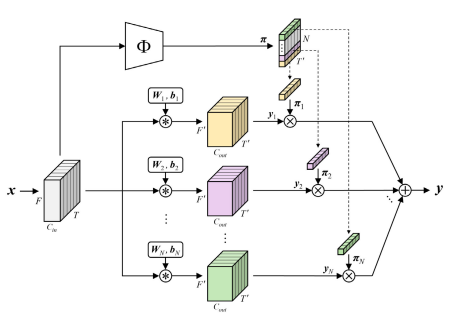
38. Analysis-Based Optimization of Temporal Dynamic
Convolutional Neural Network for Text-Independent
Speaker Verification (View)
Seong-Hu Kim, Hyeonuk Nam, Yong-Hwa Park,
IEEE Access, 2023. (SCIE, IF 3.4)
[첨부파일][37]
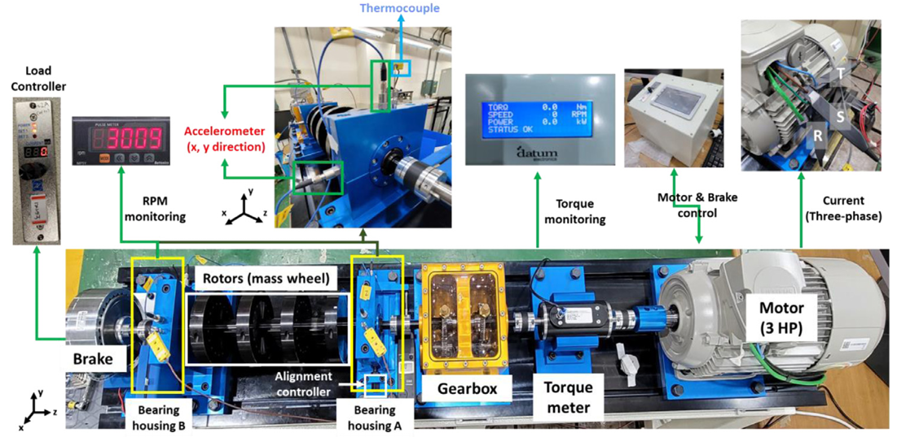
37. Vibration, acoustic, temperature, and motor current dataset of rotating machine under varying operating conditions for fault diagnosis (View)
Wonho Jung, Seong-Hu Kim, Sung-Hyun Yun, Jaewoong Bae, Yong-Hwa Park, Data in Brief, 2023. (SCIE, IF 1.0)
[첨부파일][36]
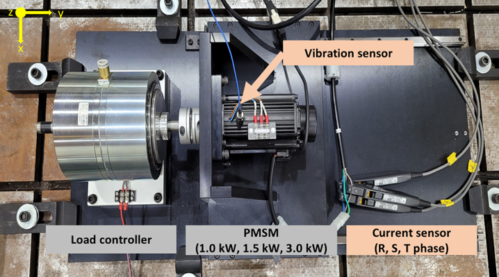
36. Vibration and current dataset of three-phase permanent
magnet synchronous motors with stator faults (View)
Wonho Jung, Sung-Hyun Yun, Yoon-Seop Lim, Sungjin Cheong,
Yong-Hwa Park, Data in Brief, 2023. (SCIE, IF 1.0)
[첨부파일][35]
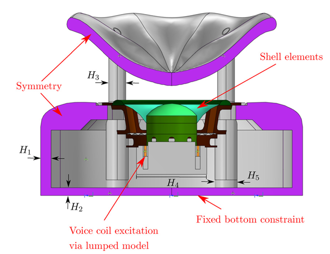
35. Experimental characterization of a shape optimized acoustic lens: Application to compact speakerphone design (View)
Peter Risby Andersen, Gyeong-Tae Lee, Daniel Gert Nielsen, Junghwan
Kook, Vicente Cutanda Henriquez, Niels Aage, Yong-Hwa Park,
Journal of the Acoustical Society of America, 2023. (SCIE, IF 2.1)
[첨부파일][34]
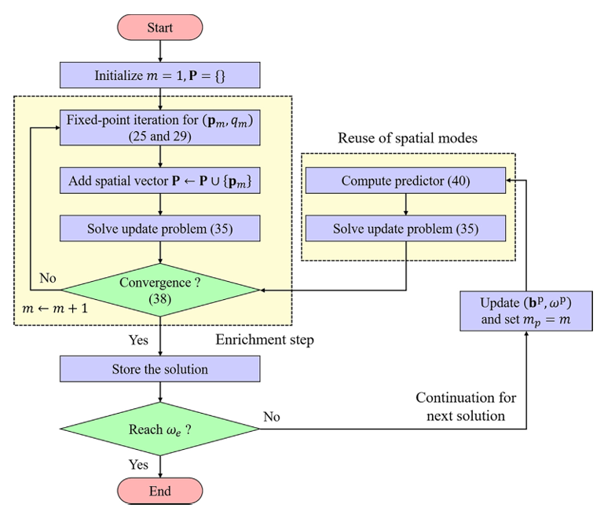
34. A proper generalized decomposition-based harmonic balance method with arc-length continuation for nonlinear frequency response analysis (View)
Gil-Yong Lee, Yong-Hwa Park, Computers & Structures,
2023. (SCIE, IF 4.4)
[첨부파일][33]
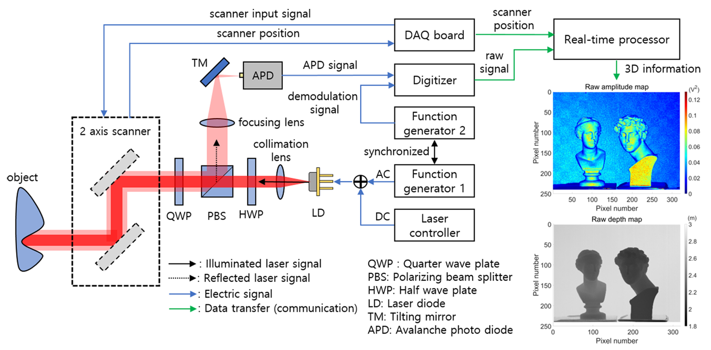
33. Highly precise AMCW time-of-flight scanning sensor based on parallel-phase demodulation (View)
Sung-Hyun Lee, Wook-Hyeon Kown, Yoon-Seop Lim, Yong-Hwa Park,
Measurement, 2022. (SCIE, IF 5.6)
[첨부파일][32]
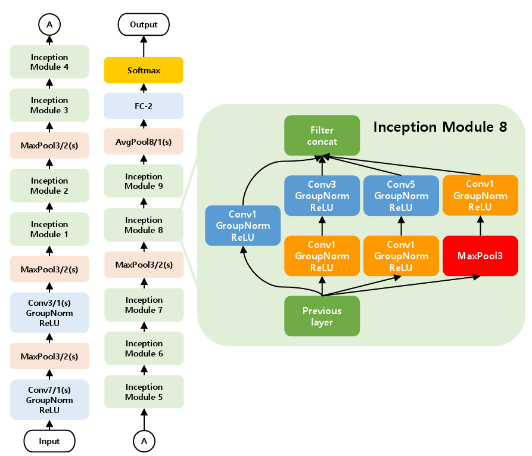
32. Deep learning based cough detection camera using
enhanced features (View)
Gyeong-Tae Lee, Hyeonuk Nam, Seong-Hu Kim, Sang-Min Choi,
Youngkey Kim, Yong-Hwa Park, Expert Systems with Applications,
2022. (SCIE, IF 8.5)
[첨부파일][31]
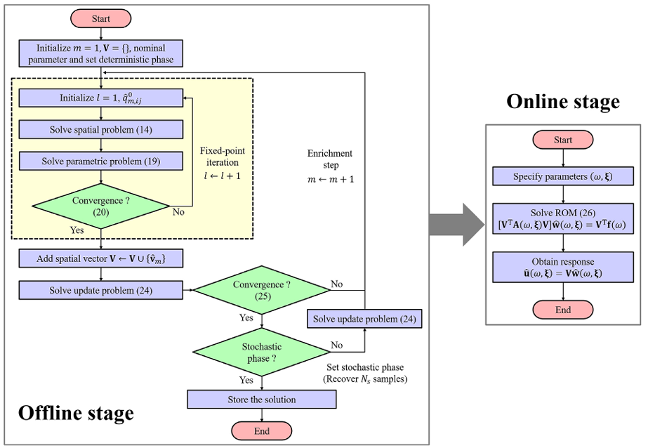
31. Reduced-order modeling via proper generalized
decomposition for uncertainty quantification of frequency
response functions (View)
Gil-Yong Lee, K.C. Park, Yong-Hwa Park, Computer Methods in
Applied Mechanics and Engineering, 2022. (SCIE, IF 7.2)
[첨부파일][30]
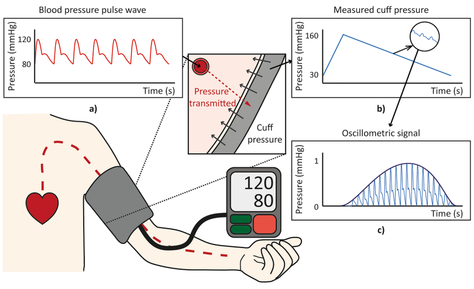
30. Correlation analysis of human upper arm parameters to
oscillometric signal in automatic blood pressure measurement (View)
Bomi Lee, Jae-Hak Jeong, Junki Hong & Yong-Hwa Park,
Scientific Reports, 2022. (SCIE, IF 4.6)
[첨부파일][29]
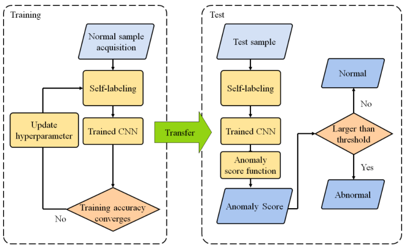
29. Normal data based rotating machine anomaly detection using CNN with self-labelling (View)
Jaewoong Bae, Wonho Jung and Yong-Hwa Park, Smart Structures and Systems, 2022. (SCIE, IF 3.5)
[첨부파일][28]
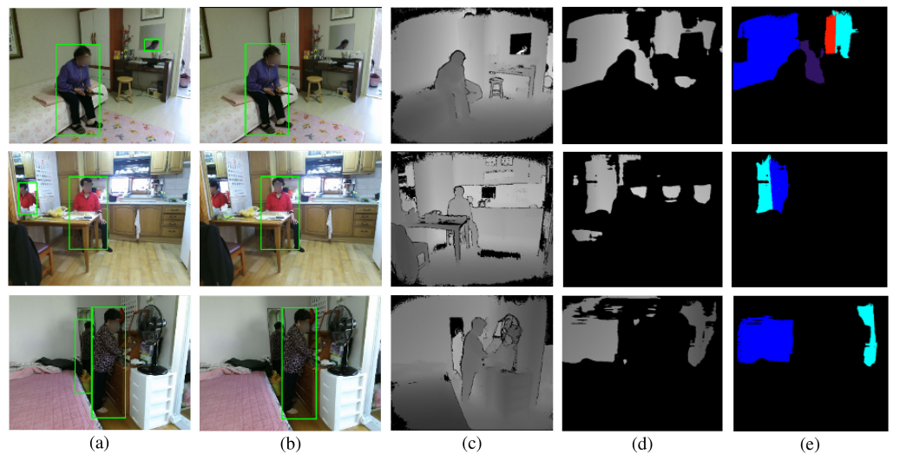
28. Identifying Reflected Images From Object Detector in Indoor Environment Utilizing Depth Information (View)
Daehee Park, Yong-Hwa Park, IEEE Robotics and Automation Letters,
2021. (SCIE, IF 4.321)
[첨부파일][27]
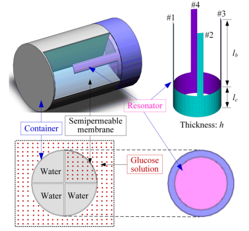
27. A method for identification of analyte concentration in
aqueous solution by using a mistuned fluid-structure
coupled vibration (View)
Yugang Chen, Kang-Jae Park, Bomi Lee & Yong-Hwa Park,
Journal of Mechanical Science and Technology, 2021. (SCIE, IF 1.81)
[첨부파일][26]
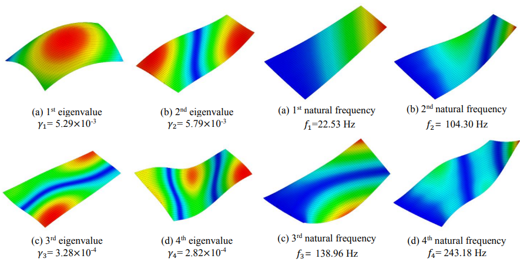
26. A natural frequency sensitivity-based stabilization in
spectral stochastic finite element method for frequency
response analysis (View)
Gil-Yong Lee, Seung-Seop Jin and Yong-Hwa Park,
Structural Engineering and Mechanics, 2020. (SCIE, IF 3.524)
[첨부파일][25]
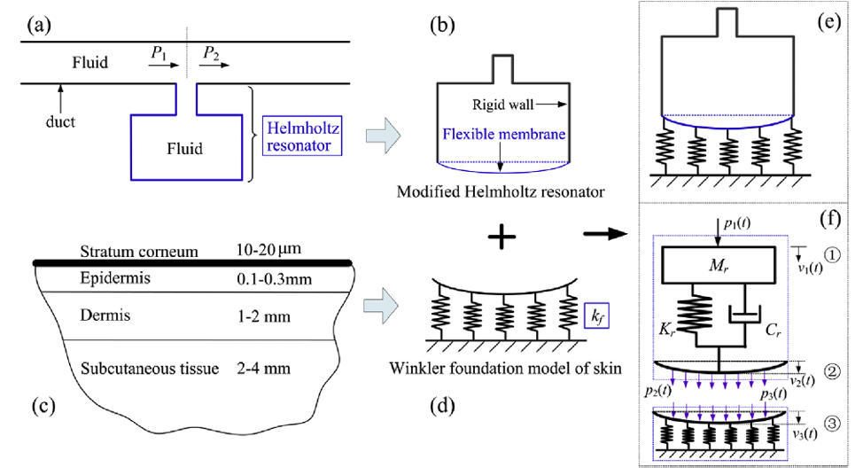
25. A Helmholtz resonator on elastic foundation for
measurement of the elastic coefficient of human skin (View)
Yugang Chen, Yong-Hwa Park, Journal of the Mechanical Behavior
of Biomedical Materials, 2020. (SCIE, IF 3.902)
[첨부파일][24]
24. Jae-Hak Jeong, Bo-Mi Lee, Jun-Ki Hong, Tae-Heon Yang, Yong-Hwa Park, "Reproduction of human blood pressure waveform using physiology-based cardiovascular simulator", SCIENTIFIC REPORTS, Vol. 13, No. 1, 2023.5; (SCIE, IF 4.997)
[23]
23. Jae-Hak Jeong, Young-Min Kim, Bomi Lee, Junki Hong, Jaeuk Kim, Sam-Yong Woo, Tae-Heon Yang, Yong-Hwa Park, "Design and Evaluation of Enhanced Mock Circulatory Platform Simulating Cardiovascular Physiology for Medical Palpation Training", Applied Sciences-BASEL, Vol.10, No. 16, pp. 1-17, 2020.8; (SCIE, IF 2.474)
[22]
22. Seong-Hu Kim, Yong-Hwa Park, "Interaural Coherence Estimation for Speech Processing in Reverberant Environment", Applied Sciences-BASEL, Vol. 10, No. 3, pp. 1-14, 2020.2; (SCIE, IF 2.474)
[21]
21. Gil-Yong, Lee, Yong-Hwa Park, "A Combined Nonstationary Kriging and Support Vector Machine Method for Stochastic Eigenvalue Analysis of Brake Systems", Applied Sciences-BASEL, Vol. 10, No. 1, pp.1-18, 2020.1; (SCIE, IF 2.474)
[20]
20. In-Gyu Jang, Sung-Hyun Lee, Yong-Hwa Park, "A Parallel-Phase Demodulation-Based Distance-Measurement Method Using Dual-Frequency Modulation", Applied Sciences-BASEL, Vol. 10, No. 1, pp. 1-15, 2020.1; (SCIE, IF 2.474)
[19]
19. Yugang Chen, Yong-Hwa Park, “Measurement of an Analyte Concentration in Test Solution by Using Helmholtz Resonator for Biosensor Applications”, Sensors, Vol.19, No.5, pp.1~9, March 2019; (SCIE, IF 3.275) (대표논문)
[18]
18. Jeongjae Ryu, Hanbert Jeong, Yugang Chen, Chungik Oh, Jaegyu Kim, Hongjun Kim, Seongwoo Cho, Kwangsoo No, Yong-Hwa Park, Steve Park, Seungbum Hong, “Flexible Piezoelectric Liquid Volume Sensor”, Sensors and Actuators A: Physical, Vol.276, pp.219~225, April 2018; (SCI, IF 2.904)
[17]
17. Byung-Hoon Na, Gun-Wu Ju, Chang-Young Park, Soo-Kyung Lee, Hee-Ju Choi, Yong-Chul Cho, Yong-Hwa Park, Yong-Tak Lee, “Electro-Absorption Modulator with an Asymmetric Coupled Triple Quantum Well for Low-Voltage Operation”, Optics Letters, Vol.40, No.14, pp.3376~3379, July 2015; (SCI, IF 3.714)
[16]
16. Gun-Wu Ju, Byung-Hoon Na, Yong-Hwa Park, Young-Min Song, Yong-Tak Lee, “Recent Approaches for Broadening the Spectral Bandwidth in Resonant Cavity Optoelectronic Devices”, Advances in Condensed Matter Physics, Vol.2015, pp.1~11, July 2015; (SCIE, IF 0.961)
[15]
15. Byung-Hoon Na, Gun-Wu Ju, Hee-Ju Choi, Soo-Kyung Lee, Sooraj Ravindran, Yong-Chul Cho, Yong-Hwa Park, Chang-Young Park, Yong-Tak Lee, “Coupled Tandem Cavities based Electro-Absorption Modulator with Asymmetric Tandem Quantum Well for High Modulation Performance at Low Driving Voltage”, Optics Express, Vol.21, No.23, pp.27924~27932, November 2013; (SCI, IF 3.669)
[14]
14. Sang-Hun Lee, Chang-Young Park, Jang-Woo You, Heesun Yoon, Yong-Chul Cho, Yong-Hwa Park, “850 nm IR Transmissive Electro-Absorption Modulator using GaAs Micromachining”, Sensors and Actuators A: Physical, Vol.197, pp.47~52, August 2013; (SCI, IF 2.904)
[13]
13. Yong-Hwa Park, Yong-Chul Cho, Jang-Woo You, Chang-Young Park, Hee-Sun Yoon, Sang-Hun Lee, Jong-Oh Kwon, Seung-Wan Lee, Byung-Hoon Na, Gun-Wu Ju, Hee-Ju Choi, Yong-Tak Lee, “Three-Dimensional Imaging using Fast Micromachined Electro-Absorptive Shutter”, Journal of Micro-nanolithography MEMS and MOEMS, Vol.12, No.2, April 2013; (SCIE, IF 1.559) (대표논문)
[12]
12. Byung-Hoon Na, Gun-Wu Ju, Hee-Ju Choi, Yong-Chul Cho, Yong-Hwa Park, Chang-Young Park, Yong-Tak Lee, “Wide Spectral Bandwidth Electro-Absorption Modulator using Coupled Micro-Cavity with Asymmetric Tandem Quantum Well”, Optics Express, Vol.20, No.17, pp.19511~19519, August 2012; (SCI, IF 3.669)
[11]
11. Byung-Hoon Na, Gun-Wu Ju, Choi, Hee-Ju Choi, Yong-Chul Cho, Yong-Hwa Park, Yong-Tak Lee, “Large Aperture Asymmetric Fabry Perot Modulator based on Asymmetric Tandem Quantum Well for Low Voltage Operation”, Optics Express, Vol.20, No.6, pp.6003~6009, March 2012; (SCI, IF 3.669)
[10]
10. Hee-Moon Jeong, Yong-Hwa Park, Yong-Chul Cho, Junsik Hwang, Seok-Mo Chang, Seok-Jin Kang, Hyun-Ku Jeong, Jun O. Kim, Jin-Ho Lee, “Slow Scanning Electromagnetic Scanner for Laser Display”, Journal of Micro-nanolithography MEMS and MOEMS, Vol.7, No.4, October 2008; (SCIE, IF 1.067)
[9]
9. Yong-Jae Lee, Yong-Hwa Park, Feng Niu, Dejan Filipovic, “Design and Optimization of RF ICs with Embedded Linear Macromodels of Multiport MEMS Devices”, International Journal of RF and Microwave Computer-Aided Engineering, Vol.17, No.2, pp.196~209, March 2007; (SCIE, IF 1.528)
[8]
8. Yong-Jae Lee, Yong-Hwa Park, Feng Niu, Dejan Filipovic, “Design and Optimisation of One-Port RF MEMS Resonators and Related Integrated Circuits using ANN-based Macro Modelling Approach”, IEE Proceedings: Circuits, Devices and Systems, Vol.153, No.5, pp.480~488, November 2006; (SCOPUS, IF 0.476)
[7]
7. Youngchul Ko, Jinwoo Cho, Yongkweun Mun, Hyungu Jeong, Wonkyoung Choi, Jungwoo Kim, Yong-Hwa Park, Ji-Boem Yoo, Jinho Lee, “Eye-Type Scanning Mirror with Dual Vertical Combs for Laser Display”, Sensors and Actuators A: Physical, Vol.126, No.1, pp.218~226, January 2006; (SCI, IF 2.904) (대표논문)
[6]
6. Yong-Jae Lee, Yong-Hwa Park, Feng Niu, Bonnie Bachman, Kuldip C. Gupta, Dejan Sokol Filipovic, “Artificial Neural Network Modeling of RIF MEMS Resonators”, International Journal of RF and Microwave Computer-Aided Engineering, Vol.14, No.4, pp.302~316, July 2004; (SCIE, IF 1.528)
[5]
5. K. C. Park, Yong-Hwa Park, “Partitioned Component Mode Synthesis via a Flexibility Approach”, AIAA Journal, Vol.42, No.6, pp.1236~1245, June 2004; (SCI, IF 2.108) (대표논문)
[4]
4. Yong-Hwa Park, K. C. Park, “High-Fidelity Modeling of MEMS resonators - Part 1: Anchor Loss Mechanisms through Substrate”, Journal of Microelectromechanical Systems, Vol.13, No.2, pp.238~247, April 2004; (SCI, IF 2.534) (대표논문)
[3]
3. Yong-Hwa Park, K. C. Park, “High-Fidelity Modeling of MEMS Resonators - Part II: Coupled Beam-Substrate Dynamics and Validation”, Journal of Microelectromechanical Systems, Vol.13, No.2, pp.248~257, April 2004; (SCI, IF 2.534) (대표논문)
[2]
2. Yong-Hwa Park, Youn-Sik Park, “Structural Modification based on Measured Frequency Response Functions: An Exact Eigenproperties Reallocation”, Journal of Sound and Vibration, Vol.237, No.3, pp.411~426, October 2000; (SCI, IF 3.429) (대표논문)
[1]
1. Yong-Hwa Park, Youn-Sik Park, “Structure Optimization to Enhance Its Natural Frequencies based on Measured Frequency Response Functions”, Journal of Sound and Vibration, Vol.229, No.5, pp.1235~1255, February 2000; (SCI, IF 3.429)